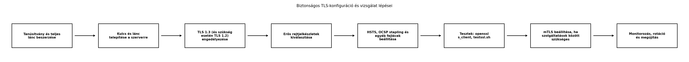

Egy TLS-t használó rendszer biztonsága nem dől el a protokollverziónál: a telepített tanúsítványlánc, a szerver által engedélyezett rejtjelkészletek, a HSTS és a kliensoldali tanúsítvány-ellenőrzés együtt határozzák meg, hogy a csatorna valóban véd-e. A TLS-támadások története alfejezetben láttuk, hogy a támadók gyakran nem a matematikai primitívet törik fel, hanem a rossz konfigurációt használják ki: lejárt tanúsítványt, hiányzó köztes CA-t, gyenge rejtjelkészletet vagy éppen azt, hogy a kliens kódban a fejlesztő kikapcsolta az ellenőrzést, mert „úgy nem működött”. Ez az alfejezet gyakorlati receptet ad a szerveroldali TLS beállításához, a saját szerver vizsgálatához, és bemutatja a kölcsönös TLS-t (mTLS) a mikroszolgáltatások közötti hitelesítésre.
A következő folyamatábra a biztonságos TLS-konfiguráció és vizsgálat lépéseit foglalja össze. Minden vizsgálatot csak a saját szerveren, a tulajdonos engedélyével végezz.

A lépések sorrendje nem merev, de a tanúsítvány és a kulcs telepítése nélkül nincs mit tesztelni; a tesztelés pedig visszahat a konfigurációra.
Definíció. A TLS 1.3 rejtjelkészlet
(cipher suite) a következőket rögzíti: AEAD titkosító algoritmus és HKDF
hash-függvény. A kulcscsere algoritmus nem része a rejtjelkészletnek,
mert a kulcscserét külön kiterjesztések tárgyalják: a
supported_groups/key_share az
(EC)DHE-csoportot, a psk_key_exchange_modes a PSK-módot.
Teljes kézfogásban ez mindig (EC)DHE; munkamenet-folytatáskor lehet
PSK+(EC)DHE vagy (ritkán) tisztán PSK. A TLS 1.3 szabványos
rejtjelkészletei például:
TLS_AES_128_GCM_SHA256,TLS_AES_256_GCM_SHA384,TLS_CHACHA20_POLY1305_SHA256.Definíció. A HSTS (HTTP Strict Transport Security) egy HTTP-válaszfejléc, amely arra utasítja a böngészőt, hogy adott ideig a domaint csak HTTPS-en keresztül érje el, és a http:// hivatkozásokat is automatikusan https://-re írja át. A fejléc tipikus alakja:
Strict-Transport-Security: max-age=31536000; includeSubDomains; preloadA preload azt jelzi, hogy a domain beküldhető a
böngészőkbe épített HSTS-listára; a böngésző így már az első kapcsolat
előtt tudja, hogy HTTPS-t kell használnia.
Definíció. A kölcsönös TLS (mutual TLS, mTLS) a TLS olyan használata, amelyben nemcsak a szerver mutatja be a tanúsítványát, hanem a kliens is. A szerver kéri a kliens tanúsítványát, és ellenőrzi annak érvényességi láncát ugyanúgy, ahogy a kliens a szerverét. Az mTLS-t gyakran használják szolgáltatások közötti hitelesítésre, ahol nincs felhasználói bejelentkezés.
Definíció. Az OCSP stapling során a
szerver a TLS-kézfogásba beágyazva elküldi a saját tanúsítványának friss
visszavonási állapotát. Ezzel a kliensnek nem kell külön
OCSP-lekérdezést indítania, ami csökkenti a késleltetést és a soft-fail
kockázatát. A TLS 1.3-ban ezt a status_request kiterjesztés
támogatja.
A gyakorlatban nem érdemes nulláról rejtjelkészlet-listát írni: a Mozilla SSL Configuration Generator (ssl-config.mozilla.org) karbantartott, böngésző-kompatibilitási adatokon alapuló profilokat ad. A három fő profil:
A pontos verzió- és rejtjelkészlet-listák idővel változnak; a Mozilla-profilok aktuális tartalmát mindig ellenőrizni kell. A következő általános szabályok azonban stabilak:
A szervernek a végfelhasználói tanúsítvány mellett a teljes köztes
CA-láncot is ki kell szolgálnia, a gyökér CA-t viszont nem kell
elküldeni: a kliens úgyis a saját bizalmi tárában lévő példányt
használja, így az elküldött gyökér csak felesleges bájt (és semmiképp
sem pótolja a bizalmi horgonyt). A lánc felépítését és az
útvonal-érvényesítést a Tanúsítványlánc,
hitelesítésszolgáltatók és visszavonás alfejezet tárgyalja.
Gyakorlati ellenőrzés: nyisd meg a domaint egy böngészővel, és
ellenőrizd, hogy a tanúsítványlánc teljes-e, nincs „Nem megbízható”
figyelmeztetés. Az openssl s_client kimenete is megmutatja,
hogy a szerver hány tanúsítványt küldött.
A kulcsot és a tanúsítványt külön fájlban tárold, a kulcs fájl jogosultságát korlátozd (például csak a szerver folyamat olvashatja). A kulcs és a tanúsítvány együttes kiszolgálása, illetve a kulcs naplózása tipikus hiba.
A HSTS fejléc csak akkor hat, ha a kliens már legalább egyszer
HTTPS-en keresztül kapta meg; az első kapcsolat előtt nem véd. A preload
lista ezt a bootstrap-sebezhetőséget csökkenti: a domain beküldhető a
böngészők által használt listába, így a böngésző már az első kérés előtt
tudja, hogy csak HTTPS-t használjon. A HSTS beállításánál a
max-age legyen hosszú: a preload-lista feltétele legalább 1
év (31536000 s), includeSubDomains-szel és
preload-dal együtt (ellenőrzési igény: a hstspreload.org
aktuális követelményei). A includeSubDomains direktívát
csak akkor használd, ha minden aldomain tartósan HTTPS-képes; a
preload-listáról való eltávolítás lassú (hónapok), ezért csak akkor
küldd be a domaint, ha ebben biztos vagy.
A belső mikroszolgáltatásoknál az mTLS a szolgáltatások közötti hitelesítés alapja. A szerveroldalon a konfiguráció lényege:
client certificate required),Az mTLS a Kulcskezelés: HSM, KMS, rotáció és életciklus alfejezetben tárgyalt kulcséletciklussal együtt működik: a belső CA-nak rövid élettartamú tanúsítványokat érdemes kiállítania, hogy a visszavonás egyszerűbb legyen.
Példa (worked example 1): az openssl s_client
kimenete. Csatlakozás a saját, example.com
domainre (a tényleges domaint helyettesítsd be):
openssl s_client -connect example.com:443 -servername example.com -tls1_3 -verify_hostname example.com -verify_return_errorA -servername a SNI-kiterjesztés beállításához kell,
hogy a szerver a megfelelő virtuális hoszt tanúsítványát küldje. A
-verify_hostname <név> megadja, milyen névre kell
szólnia a tanúsítványnak; a -verify_return_error hatására
ellenőrzési hibánál a kliens megszakítja a kézfogást. A kapott
kimenetből a következőket ellenőrizd:
subject=CN=example.com
issuer=CN=Intermediate CA
...
Verification: OK
Verified peername: example.com
New, TLSv1.3, Cipher is TLS_AES_256_GCM_SHA384
...
Verify return code: 0 (ok)Ez egy kivonat (a „…” kihagyott sorokat jelöl); a pontos formátum
OpenSSL-verziónként kissé eltér (a sorok OpenSSL 3.x
s_client kimeneti formátumát követik, a konkrét nevek
szemléltetők, a parancsot ebben a körben nem futtattuk). A
subject és issuer sor a tanúsítvány
azonosítását, a New, TLSv1.3, Cipher is … sor a kialkudott
verziót és rejtjelkészletet, a Verification: OK és a
Verify return code: 0 (ok) a lánc ellenőrzésének sikerét
mutatja. Ha a lánc hiányos, az ellenőrzés hibát ad (például
unable to get local issuer certificate). Ha a szerver a
gyökér CA-t is elküldi, az nem hiba, de felesleges.
A testssl.sh egy parancssori eszköz, amely számos
ellenőrzést elvégez a megadott szerveren: protokollverziók,
rejtjelkészletek, tanúsítványvalidálás, HSTS, OCSP stapling, közismert
sebezhetőségek. Használata:
testssl.sh example.comAz eszköz kimenete részletes, és segít azonosítani a gyenge konfigurációt. Csak a saját szervereden futtasd, mert más szervere ellen a vizsgálat jogi és etikai problémákat vet fel.
A fejlesztők gyakran kikapcsolják a tanúsítvány-ellenőrzést, hogy a fejlesztőkörnyezetben self-signed tanúsítvánnyal működjön a kód. Ez a beállítás azonban könnyen élesbe kerül, és akkor a kliens bármilyen tanúsítványt elfogad, így egy aktív támadó közbeékelődhet. Pythonban például a következő hívások tiltják le az ellenőrzést, és ezért élesben tilosak:
context.verify_mode = ssl.CERT_NONE
context.check_hostname = FalseMás nyelveken hasonlóan veszélyes: Java-ban az üres
X509TrustManager, Node.js-ben a
rejectUnauthorized: false, curl esetén a -k
kapcsoló. Ezt a hibát a API-misuse: a leggyakoribb
kriptográfiai programozási hibák alfejezet részletesen tárgyalja.
Itt elég annyi: éles kódban a tanúsítvány-ellenőrzést soha ne kapcsold
ki; a fejlesztőkörnyezetben is használj teszt-CA-t.
Az alábbi Python-kód a standard ssl modullal biztonságos
TLS-klienst hoz létre, amely ellenőrzi a tanúsítványláncot és a
hosztnevet. A példa oktatási célú, a cafile paramétert a
saját CA-fájlra vagy a rendszer megbízható CA-listájára kell
állítani.
# OKTATÁSI CÉLRA – NEM ÉLES HASZNÁLATRA
import ssl
import socket
def tls_client(host, port=443, cafile="ca.pem"):
# Alapértelmezett, biztonságos kontextus: ellenőrzés bekapcsolva.
context = ssl.create_default_context(cafile=cafile)
context.verify_mode = ssl.CERT_REQUIRED
context.check_hostname = True
context.minimum_version = ssl.TLSVersion.TLSv1_2
with socket.create_connection((host, port), timeout=5) as sock:
with context.wrap_socket(sock, server_hostname=host) as tls:
print("TLS verzió:", tls.version())
print("Rejtjelkészlet:", tls.cipher())
cert = tls.getpeercert()
print("Subject:", cert.get("subject"))
print("Issuer:", cert.get("issuer"))
return True
# Példa hívás a saját szerverre:
tls_client("example.com", 443, "ca.pem")Várt kimenet (szemléltető, nem futtatott értékek; az
SSLSocket.cipher() a
(név, protokoll, titkos bitek) hármast adja vissza):
TLS verzió: TLSv1.3
Rejtjelkészlet: ('TLS_AES_256_GCM_SHA384', 'TLSv1.3', 256)
Subject: ((('commonName', 'example.com'),),)
Issuer: ((('commonName', 'Internal CA'),),)A create_default_context már alapértelmezetten ellenőrzi
a tanúsítványt, de a kódban explicit módon is beállítjuk a
CERT_REQUIRED és check_hostname = True
értékeket, hogy hangsúlyozzuk a szándékot. A
server_hostname megadása a SNI-hez és a
hosztnév-ellenőrzéshez szükséges.
Recept. A következő számozott lépéseket használd a webszerver TLS-beállításának ellenőrzésére. A lépések általánosak, és nem kötődnek egyetlen webszerver-termékhez.
max-age értékkel, és
ha minden aldomain HTTPS-t használ, az includeSubDomains
direktívát. Fontold meg a preload listára való felvételt.openssl s_client-tel és
testssl.sh-val; csak a saját szervereden.Egy gyakori éles környezet a Kubernetes-alapú mikroszolgáltatás-architektúra, ahol a szolgáltatások közötti forgalmat mTLS védi. Egy service mesh réteg (például Istio vagy Linkerd) minden podhoz egy rövid élettartamú tanúsítványt rendel. A mesh vezérlősíkja egy belső CA-t üzemeltet, amely automatikusan állítja ki és forgatja a tanúsítványokat. Minden szolgáltatás proxyja a bejövő és kimenő kapcsolatoknál elvégzi a TLS-kézfogást, a szerver ellenőrzi a kliens tanúsítványát, és a kliens is ellenőrzi a szervert. Az alkalmazás kódja így gyakran nem is lát TLS-t, csak a mesh-en keresztül kommunikál.
Ennek előnye, hogy a szolgáltatások közötti hitelesítés nem függ a fejlesztőktől, és a tanúsítvány-rotáció központilag történik. Hátránya, hogy a mesh konfigurációjában is el lehet rontani a CA-kezelést: ha a belső CA magánkulcsa kiszivárog, a támadó saját kliens-tanúsítványt állíthat ki, és bejuthat a belső hálózatba. Ezért a CA-kulcsot hardveres biztonsági modulban vagy távoli KMS-ben kell tárolni, és a hozzáférést naplózni kell.
CERT_NONE,
check_hostname=False,
rejectUnauthorized: false vagy curl -k
használata, majd a kód élesbe kerülése. Ez lehetővé teszi a
közbeékelődést. Helyes gyakorlat: az ellenőrzés mindig bekapcsolva,
fejlesztéshez teszt-CA-t használj.openssl s_client-tel
ellenőrizni.max-age. Az
első kapcsolat http-ről marad, és a támadó lecsaphat. Helyes: HSTS
fejléc, hosszú max-age, és lehetőleg preload.Továbbvitt eredmény. Az itt bemutatott konfigurációs ellenőrzőlista és a tesztelési szemlélet a Könyvtárválasztás, auditálás, tesztvektorok és fuzzing alfejezetben tér vissza; a tanúsítvány-ellenőrzés kikapcsolásának veszélyét a API-misuse: a leggyakoribb kriptográfiai programozási hibák alfejezet tárgyalja részletesen.
-servername kapcsolót használni az
openssl s_client parancsban?context.verify_mode = ssl.CERT_NONE beállítás?1. feladat (A). Magyarázd el, miért nem része a TLS 1.3 rejtjelkészletnek a kulcscsere algoritmus, és sorolj fel három szabványos TLS 1.3 rejtjelkészletet.
2. feladat (A). Egészítsd ki a következő parancsot úgy, hogy az ellenőrizze a hosztnevet és a tanúsítványláncot, és csak TLS 1.3-at engedjen:
openssl s_client -connect example.com:443 -servername example.com ...3. feladat (B). Írj Python-kódot, amely a standard
ssl modullal kapcsolódik egy szerverhez, kiírja a peer
tanúsítvány subject és issuer mezőit, és aktívan ellenőrzi a
tanúsítványt. A kód legyen rövid, és használjon cafile
paramétert.
4. feladat (B). Egy szerver csak TLS 1.2-t
engedélyez, és a rejtjelkészlet
TLS_ECDHE_RSA_WITH_AES_128_CBC_SHA. Azonosítsd a
problémákat, és javasolj modern alternatívát.
5. feladat (C). Modellezd a következő támadást: a szerver mTLS-t kér, de nem ellenőrzi a kliens tanúsítvány láncát. Írd le a támadó lépéseit, és bizonyítsd be, hogy a csatorna hitelessége nem teljesül.
6. feladat (D). Állíts össze egy saját
tesztkörnyezetet: hozz létre egy belső CA-t, szerver- és
kliens-tanúsítványt, és konfigurálj egy mTLS-t használó Python szervert
(ssl modul). Teszteld openssl s_client-tel, és
dokumentáld, hogy a kliens tanúsítvány nélküli kapcsolat sikertelen.
Önellenőrzés – válaszok
supported_groups/key_share,
psk_key_exchange_modes) tárgyalják. Teljes kézfogásban ez
(EC)DHE; munkamenet-folytatáskor lehet PSK+(EC)DHE vagy ritkán tisztán
PSK.-servername a SNI-kiterjesztés beállításához
szükséges, hogy a szerver a megfelelő virtuális hoszt tanúsítványát
küldje; enélkül hibás tanúsítványt kaphatunk.CERT_NONE kikapcsolja a tanúsítvány-ellenőrzést, így
a kliens bármilyen tanúsítványt elfogad, lehetővé téve
közbeékelődést.1. feladat. A TLS 1.3-ban a kulcscsere a kézfogás
key_share kiterjesztésében történik, és nem része a
rejtjelkészlet-egyeztetésnek. Három szabványos rejtjelkészlet:
TLS_AES_128_GCM_SHA256,
TLS_AES_256_GCM_SHA384,
TLS_CHACHA20_POLY1305_SHA256.
2. feladat. A teljes parancs:
openssl s_client -connect example.com:443 -servername example.com -tls1_3 -verify_hostname example.com -verify_return_error3. feladat. A Python-kód megegyezik a korábbi
tls_client függvénnyel; a lényeg a
create_default_context(cafile=…),
verify_mode = CERT_REQUIRED és
check_hostname = True használata. A kód a példában már
szerepel, és a subject/issuer kiíratást is
elvégzi.
4. feladat. A rejtjelkészlet AES-CBC-t használ,
amely padding oracle támadásnak lehet kitéve; nincs AEAD
integritásvédelem; TLS 1.2 önmagában nem baj, de a modern profil TLS
1.3-at preferálna. Javaslat: engedélyezd a TLS 1.3-at, és használj
TLS_AES_128_GCM_SHA256 vagy
TLS_AES_256_GCM_SHA384 készletet; ha TLS 1.2 is kell, akkor
TLS_ECDHE_RSA_WITH_AES_128_GCM_SHA256 típust.
5. feladat. Ha a szerver nem ellenőrzi a kliens
láncát, a támadónak nem kell közbeékelődnie: generál egy kulcspárt és
egy önaláírt tanúsítványt CN=billing (vagy SAN=billing)
névvel, majd közvetlenül csatlakozik. A CertificateVerify-t
a saját kulcsával helyesen aláírja, így a kézfogás sikeres. A szerver a
subject/SAN-t adja át az alkalmazásnak (lásd az mTLS-konfiguráció
harmadik pontját), amely a támadót a billing
szolgáltatásként kezeli. A hitelesség (a szerver csak akkor fogad el
„billing” identitást, ha a peer a billing kulcsát birtokolja) nem
teljesül, mert a név–kulcs hozzárendelést a CA-aláírás nélkül senki nem
igazolta; a támadás egy kulcsgenerálásnyi munkába kerül, sikerének
valószínűsége 1. A következmény: hamis identitás és jogosulatlan
hozzáférés.
6. feladat. A következő kód csak saját, helyi
laborban használható; a parancsokat és a kódot ebben a körben nem
futtattuk (szemléltető). 1) Belső CA és tanúsítványok (magas port, nem
kell root; a Python 3.13+ szigorú X.509-ellenőrzése miatt a CA-nak
keyUsage kiterjesztés kell, a szervertanúsítványnak
SAN):
openssl req -x509 -newkey rsa:2048 -nodes -keyout ca.key -out ca.pem -days 30 -subj "/CN=Internal CA" -addext "basicConstraints=critical,CA:TRUE" -addext "keyUsage=critical,keyCertSign,cRLSign"
openssl req -newkey rsa:2048 -nodes -keyout srv.key -out srv.csr -subj "/CN=localhost"
printf "subjectAltName=DNS:localhost" > srv.ext
openssl x509 -req -in srv.csr -CA ca.pem -CAkey ca.key -CAcreateserial -out srv.crt -days 30 -extfile srv.ext
openssl req -newkey rsa:2048 -nodes -keyout cli.key -out cli.csr -subj "/CN=client1"
openssl x509 -req -in cli.csr -CA ca.pem -CAkey ca.key -CAcreateserial -out cli.crt -days 30# OKTATÁSI CÉLRA – NEM ÉLES HASZNÁLATRA
import socket
import ssl
ctx = ssl.SSLContext(ssl.PROTOCOL_TLS_SERVER)
ctx.load_cert_chain("srv.crt", "srv.key")
ctx.verify_mode = ssl.CERT_REQUIRED
ctx.load_verify_locations("ca.pem")
with socket.create_server(("127.0.0.1", 8443)) as srv:
with ctx.wrap_socket(srv, server_side=True) as tsrv:
while True:
try:
conn, addr = tsrv.accept()
except ssl.SSLError as e:
print("kézfogás elutasítva:", e.reason)
continue
with conn:
print("kliens:", conn.getpeercert().get("subject"))
conn.sendall(b"hello\n")openssl s_client -connect localhost:8443 -CAfile ca.pem -cert cli.crt -key cli.key
(siker) és ugyanez -cert/-key nélkül. Fontos
TLS 1.3-specifikus részlet: tanúsítvány nélkül a kapcsolat a kliens
oldalán felépülni látszik, és az elutasítás csak az első olvasásnál
érkezik meg alert certificate required (116) riasztásként;
a szerver oldalán a kézfogás hibával végződik. Aki csak a
CONNECTED sort nézi, tévesen sikeresnek hinné.A gyakorlati TLS-biztonság a helyes konfiguráción múlik. A szerveren
a teljes tanúsítványláncot telepíteni kell, a köztes CA-kkal együtt, a
gyökér elküldése nélkül (az elhagyható). Csak TLS 1.3-at és szükség
esetén TLS 1.2-t engedélyezz, AEAD-alapú rejtjelkészletekkel; a CBC-t és
a static RSA-t kerüld. A HSTS hosszú max-age-dzsel és
lehetőleg preloaddal védi az első kapcsolatot is. Az OCSP stapling
csökkenti a visszavonás-ellenőrzés késleltetését. Szolgáltatások között
az mTLS biztosítja a kölcsönös hitelesítést, de csak akkor, ha a szerver
a kliens tanúsítvány láncát is validálja. A tanúsítvány-ellenőrzés
kikapcsolása kódban közbeékelődéshez vezet; a Python ssl
modulban mindig CERT_REQUIRED és
check_hostname = True legyen. A szervert
openssl s_client-tel és testssl.sh-val csak a
saját tulajdonú szerveren vizsgáld. Továbbvitt
eredmény: a konfigurációs ellenőrzőlista a Könyvtárválasztás, auditálás, tesztvektorok és
fuzzing alfejezetben, a tanúsítvány-ellenőrzés kikapcsolásának
hibája a API-misuse: a leggyakoribb kriptográfiai
programozási hibák alfejezetben kerül ismét elő.
Az alfejezet az RFC 8446 (TLS 1.3), a Mozilla SSL Configuration
Generator és az OpenSSL s_client dokumentációjának
nyilvános ajánlásaira épül. A konkrét rejtjelkészlet-listák, a
Mozilla-profilok pontos tartalma, a testssl.sh kimeneti formátuma és a
Python ssl modul API-részletei verziófüggők; használat
előtt ellenőrizd az aktuális dokumentációt. Nem adtam meg konkrét
webszerver-termék teljes konfigurációs útmutatóját, mert az meghaladja
az alfejezet célját.